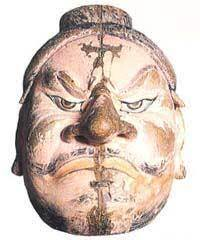
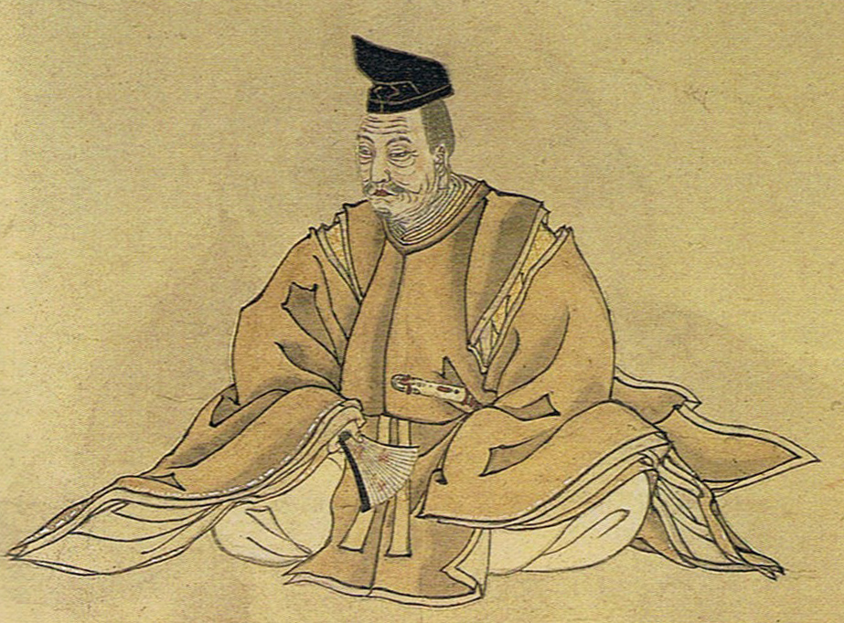

アテルイ

藤原氏

金色堂
今から約2300年前に東北地方にも弥生文化が伝わり、水田も作られるようになりました。
また、役に2000前から米作りがあったと言われています。奈良時代に、東北地方北部を統一政権の配下に入れようと朝廷側は侵略をはじめますが、
アテルイを指導者に反撃し、一時は朝廷側に痛手を与えますが、朝廷側に坂上田村麻呂が派遣され、
遂に降伏します。そして、岩手県も朝廷の支配下になりました。平安の初めには政治の拠点として胆沢城（奥州市）、志波城（盛岡市）、徳丹城（矢巾町）が建設され、
律令による朝廷の統一支配が始まりました。
しかし、朝廷の力が衰えてきた平安時代には、安倍氏、清原氏、藤原氏などの豪族が力を増幅させ、地方を支配するようになりました。